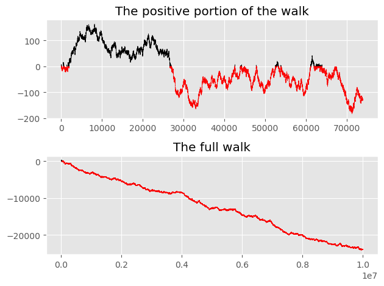

Python Homework #2
Contents
Python Homework #2#
A weighted random walk#
Prerequisites: The videos up to and including “Counting using NumPy”.
Corresponding Outcomes#
Instructions#
In a group of 1-3 students, work on answering the following questions in a Jupyter notebook. Submit the ipynb file with your solutions to Canvas. You and your group members can submit the same assignment, but all of you should upload it individually to Canvas.
Group Members#
Group Member 1:
Group Member 2:
Group Member 3:
Part A#
Instantiate a random number generator in NumPy and assign it the variable name
rng.
import numpy as np
rng = np.random.default_rng()
Using the
choicemethod ofrng, make a length-20 NumPy array of randomly chosen 1s and -1s, with 1 and -1 equally likely. (Be sure you’re not using any loops in this. Instead use thesizekeyword argument ofchoice.) Name the resulting arrayx.
x = rng.choice([-1,1], size = (20))
Compute the cumulative sum of the elements in
xusing NumPy’scumsumfunction. Name the resulty. Look at the values inxandyand make sure you understand how the two relate to each other.
y = np.cumsum(x)
x
array([[ 1, 1, -1, 1, -1, 1, -1, -1, -1, 1, 1, 1, 1, -1, -1, 1,
1, 1, 1, 1]])
y
array([ 1, 2, 1, 2, 1, 2, 1, 0, -1, 0, 1, 2, 3, 2, 1, 2, 3,
4, 5, 6])
Make a length ten million NumPy array with randomly chosen 1s and -1s. Again name the result x.
What proportion of the values in
xare 1? Compute this using a for loop and an if statement. (If your answer isn’t close to 0.5, then check your code for mistakes.)What proportion of the values in
xare 1? Compute this using a Boolean array,count_nonzeroand dividing.What proportion of the values in
xare 1? Compute this usingmean.(Make sure your answers are the same.)
How do these computations compare in terms of speed? Answer using
%%timeit.
x = rng.choice([-1,1],size = (10**7))
x
array([-1, 1, -1, ..., -1, -1, 1])
%%timeit
count = 0;
for i in x:
if i == 1:
count += 1
count/10**7
1.16 s ± 26.3 ms per loop (mean ± std. dev. of 7 runs, 1 loop each)
%%timeit
np.count_nonzero(x == 1)/10**7
5.89 ms ± 109 µs per loop (mean ± std. dev. of 7 runs, 100 loops each)
%%timeit
(x == 1).mean()
15.9 ms ± 350 µs per loop (mean ± std. dev. of 7 runs, 100 loops each)
Part B#
Check the documentation for the choice method of rng. Notice that there is an argument for assigning weights to the different options.
Make a length ten million NumPy array
zof 1s and -1s, where -1 is chosen 50.1% of the time, and where 1 is chosen 49.9% of the time.Check what proportion of the elements in
zare equal to 1. The number should be very close to 0.499 (definitely closer to 0.499 than to 0.5).
z = rng.choice([-1,1], size = 10**7, p = [0.501,0.499])
(z == 1).mean()
0.4988045
Make the corresponding length 10 million weighted random walk corresponding to
z. Save the resulting NumPy array with the variable namew.
w = np.cumsum(z)
What proportion of elements in
wdo you expect to be positive? Compute this proportion. Did it match your expectation?What is the maximum value in
w? What is the minimum value inw?What are the first 50 indices at which
whas absolute value greater than 100? Use NumPy’snonzerofunction to find this, together with two Boolean arrays and the NumPy version of or (which is notor), by checking wherewis greater than 100 or is less than -100. Store these indices with the variable namem. (Remember thatnonzeroreturns a tuple.)What was the value of
wat these indices? (This should be as easy evaluatingw[m].)
(w > 0).mean()
0.0027386
w.max()
163
w.min()
-24053
m = np.nonzero((w > 100) | (w < -100))[0][:50]
w[m]
array([101, 102, 101, 101, 102, 101, 101, 101, 102, 103, 104, 105, 104,
105, 106, 107, 108, 109, 108, 107, 108, 107, 108, 109, 108, 107,
108, 109, 110, 109, 108, 107, 108, 107, 106, 105, 104, 103, 104,
105, 104, 105, 106, 107, 108, 109, 108, 107, 108, 109])
Part C#
Just like there is a NumPy
zerosfunction and a NumPyonesfunction, there is a NumPyfullfunction which fills any value you want in. Make a length ten million NumPy array containing the letter"r"in every slot (for “red”). Name this arrayc.Again using
nonzero, find all the indices wherewis positive. (Ifwis never positive, then re-computewandzto get new random values.) Name the array of these indicesinds.Change all the values of
ccorresponding to theindsindices to"k"(for “black”) using the commandc[inds] = "k".Let
mpi(for maximum positive index) be the maximum index wherewis positive.Print
mpi. What proportion of the way into the walk does the value ofwbecome negative and never switch back? Answer this question in a markdown cell.
c = np.full(10**7, "r")
inds = np.nonzero((w > 0))[0]
c[inds] = "k"
mpi = np.nonzero((w > 0))[0].max()
print(mpi)
63988
mpi/10**7
0.0063988
How many times does w switch from positive to negative? Here is a slick way to answer that question. For any index i, the triple
w[i],w[i+1],w[i+2]
goes
positive, zero, negative
if and only if i is in inds and i+1, i+2 are not in inds. (Not to be turned in: try writing a proof of this, using cases. The backwards direction of this if-and-only-if proof is the easier direction.)
We can check this condition by looking at consecutive elements in inds. For example, if we know ... 240, 248, ... are two consecutive elements in inds, then we know that w[240] was positive, w[241] was zero, w[242] was negative, …. The key property in this example is that 248-240 > 2: there is a gap of size greater than 2 between positive indices. We can compute all these gaps at once by computing inds[1:]-inds[:-1]. For example, try evaluating the following.
A = np.array([1,2,3,4,8,9,10,238,239,240,248,249,250,251,252])
A[1:] - A[:-1]
A = np.array([1,2,3,4,8,9,10,238,239,240,248,249,250,251,252])
A[1:] - A[:-1]
array([ 1, 1, 1, 4, 1, 1, 228, 1, 1, 8, 1, 1, 1,
1])
A[:-1]
array([ 1, 2, 3, 4, 8, 9, 10, 238, 239, 240, 248, 249, 250,
251])
A[1:]
array([ 2, 3, 4, 8, 9, 10, 238, 239, 240, 248, 249, 250, 251,
252])
Using that idea, compute how often
wswitches from positive to negative, by counting how often this “consecutive difference array” is greater than 2. Use a Boolean array and thecount_nonzerofunction. And actually add 1 to this number, because the very last index also represents a switch from positive to negative.How often is there a gap of at least 1000 between positive indices? Use the same strategy we just used looking for gaps of size greater than 2.
If there are fewer than 3 of these size-1000 gaps, rerun the code (starting at the 50.1% part) to get new random numbers until there are at least 3 size-1000 gaps.
What are the sizes of these gaps? Use Boolean indexing.
np.count_nonzero((inds[1:] - inds[:-1]) > 2 ) + 1
96
np.count_nonzero((inds[1:] - inds[:-1]) > 1000 )
5
gas = (inds[1:] - inds[:-1]) > 1000
(inds[1:] - inds[:-1])[gaps]
array([15588, 1318, 3538, 4678, 7262])
Part D#
Let
m0bempi+10,000.Define
w0to be the firstm0values inwand definec0to be the firstm0values inc. (Use slicing.)Using NumPy’s
arangefunction, make the NumPy arrayxcorresponding to[0, 1, ..., (10**7)-1]and then setx0 = x[:m0].Using slicing, define
x1to be every 50-th element inx(meaningx[0],x[50], …), definew1to be every 50-th element inw, and definec1to be every 50-th element inc.
m0 = mpi+10000
w0 = w[:m0]
c0 = c[:m0]
x = np.arange(10**7)
x0 = x[:m0]
x1 = x[::50]
w1 = w[::50]
c1 = c[::50]
As a preview of Matplotlib which will be introduced next week, evaluate the following after defining the above variables. Don’t worry about understanding this code for now. (You may have to install Matplotlib; install it the same way you installed NumPy.)
import matplotlib.pyplot as plt
plt.style.use('ggplot')
fig, axs = plt.subplots(2)
axs[0].scatter(x0, w0, s=0.01, c=c0)
axs[0].set_title("The positive portion of the walk")
axs[1].scatter(x1, w1, s=0.01, c=c1)
axs[1].set_title("The full walk")
plt.tight_layout()
import matplotlib.pyplot as plt
plt.style.use('ggplot')
fig, axs = plt.subplots(2)
axs[0].scatter(x0, w0, s=0.01, c=c0)
axs[0].set_title("The positive portion of the walk")
axs[1].scatter(x1, w1, s=0.01, c=c1)
axs[1].set_title("The full walk")
plt.tight_layout()

Answer the following questions in a markdown cell.
Can you recognize the gap sizes you found above in the positive picture? Answer in about one sentence.
Earlier you found what proportion of the way into the full walk do the values become negative, never to return to positive. Can you recognize that in these pictures? Answer in about one sentence.
Why do you think we plot the full walk using
x1, w1instead of usingx,w?